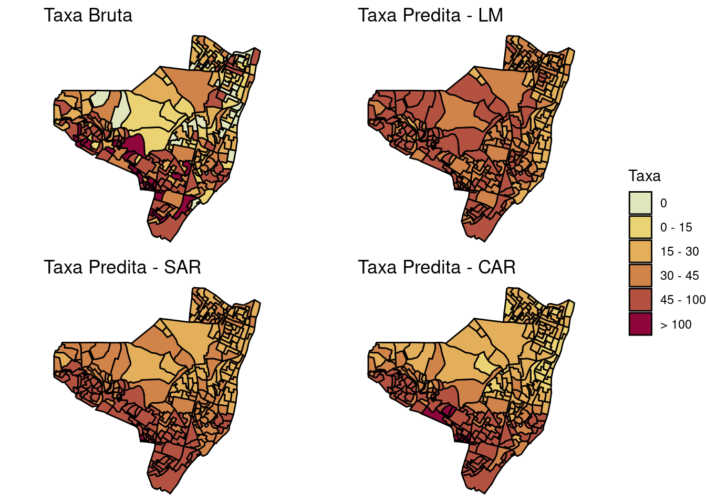
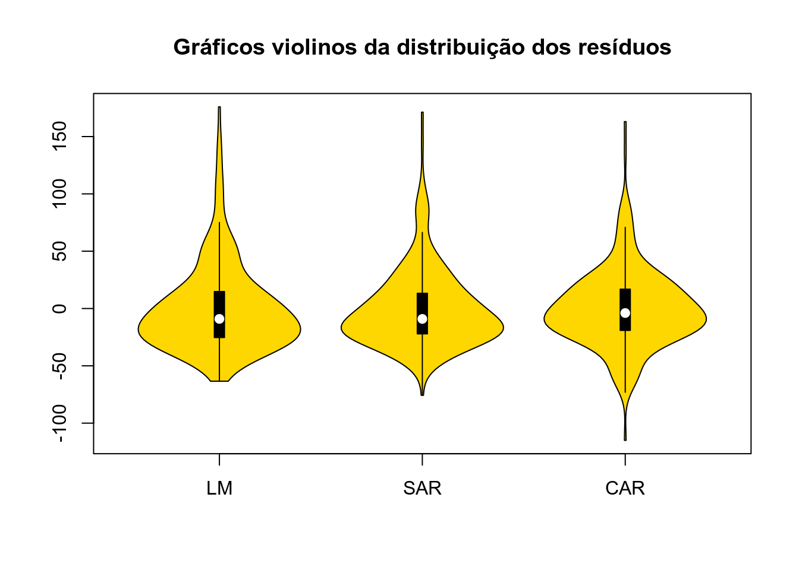
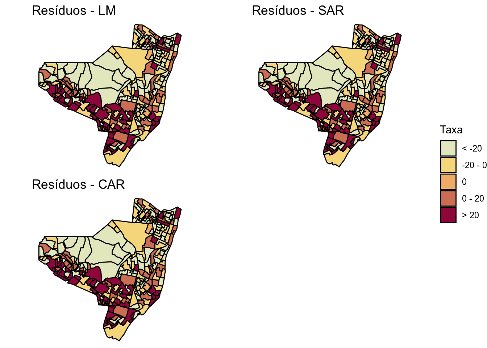
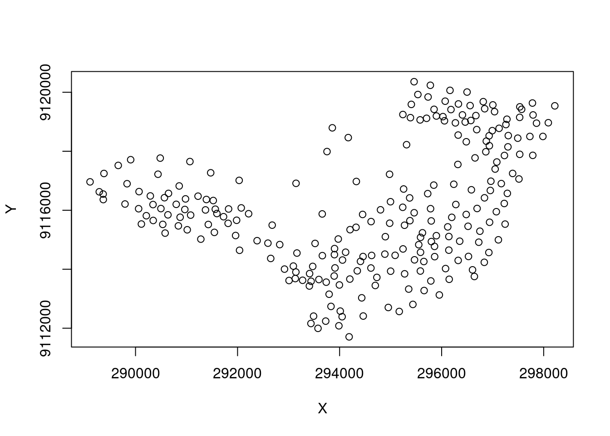
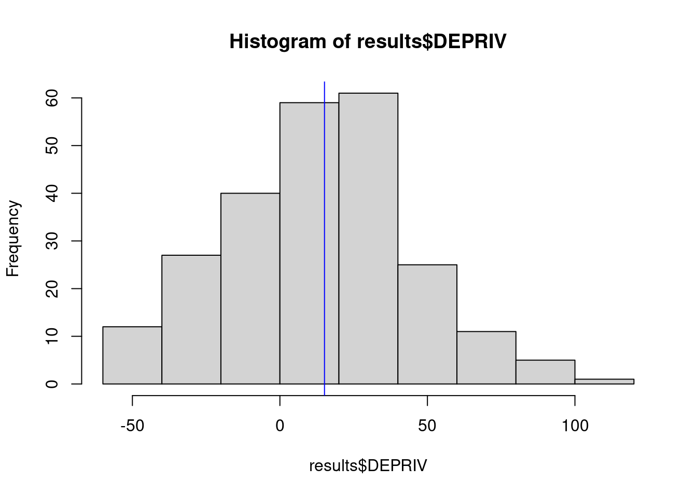
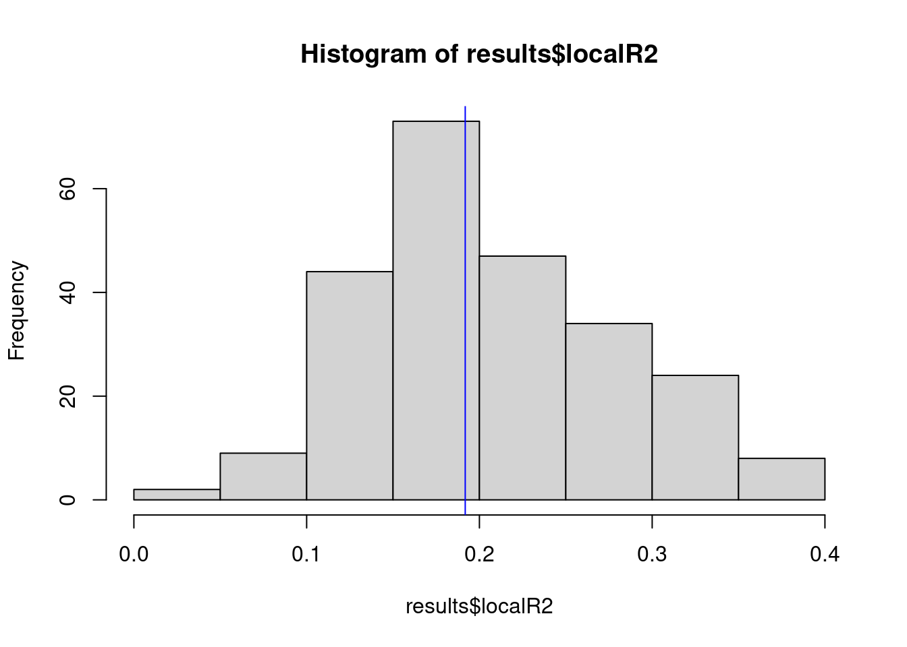
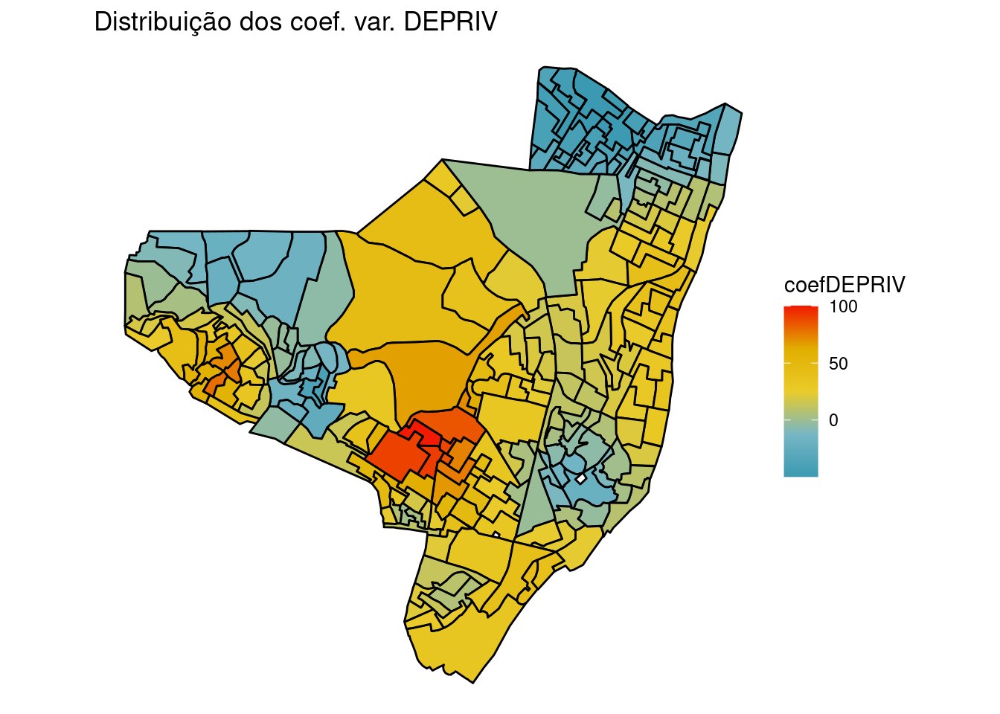
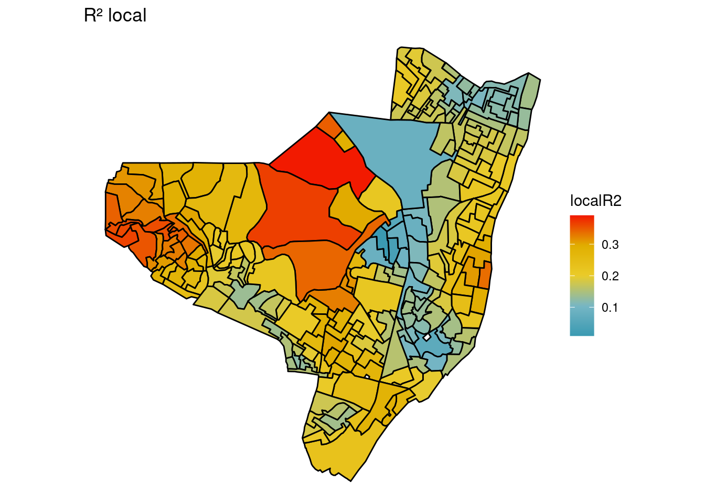
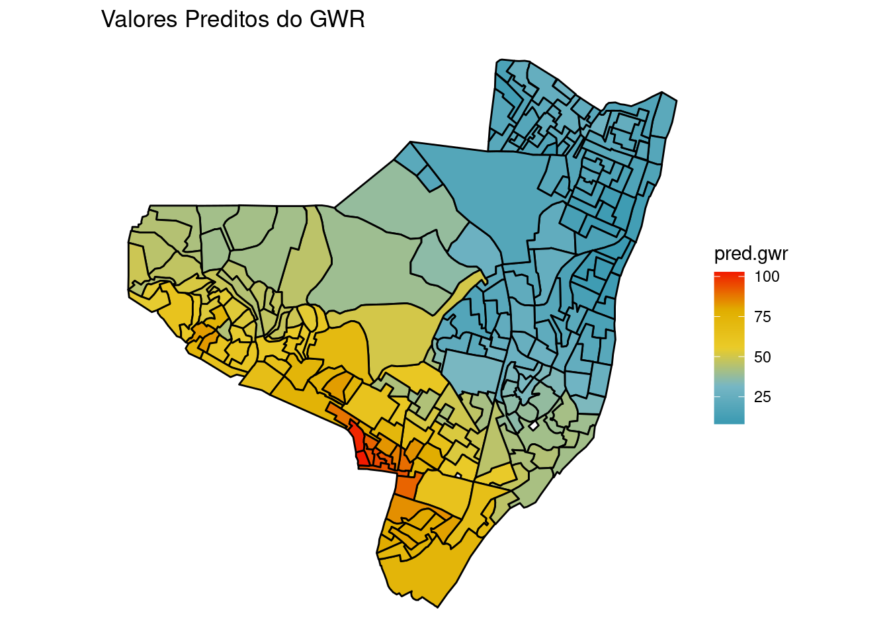
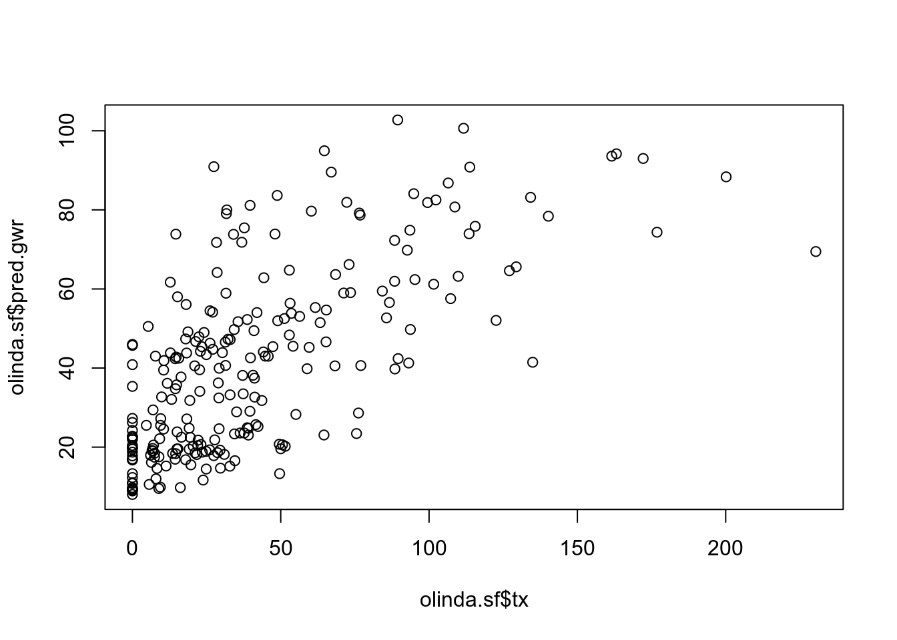

11 Dados de Área II
11.1 Introdução
Hipótese de independência das observações em geral é Falsa ⇒ Dependência Espacial
Efeitos Espaciais ⇒ Se existir forte tendência ou correlação espacial, os resultados serão influenciados, apresentando associação estatística onde não existe (e vice-versa);
Como verificar? ⇒ Medir a autocorrelação espacial dos resíduos da regressão (Índice de Moran dos resíduos).
Autocorrelação espacial constatada! E agora ? ⇒ Utilizar Modelos de regressão que incorporam efeitos espaciais.
Modelos Estatísticos espaciais VS Modelos Econométricos espacias
Os primeiros modelos em estatística espacial começam em meados da década de 1950 e ganham grande impulso com os trabalhos de Besag (1974); Besag and Moran (1975); Ord (1975) e o livro de Ripley (1981).
Já os modelos econométricos espaciais começam a se desenvolver a partir do inicio da década de 1980, tendo entre seus pioneiros Luc Anselin, que desenvolveu muitos métodos nessa área. Alguns desses métodos diferem dos modelos tradicionais baseados em estatística espacial. E isso é relevante, pois Luc Anselin e colaboradores desenvolveram um software de análise espacial chamado GEODA baseado nos princípios de econometria espacial! Ainda que alguns métodos sejam em comum com a estatística espacial, por exemplo o I de Moran, os modelos de regressão partem de visões diferentes sobre a como incorporar a autocorrelação espacial. Os modelos espaciais econométricos são chamados spatial lag model (SAR) e spatial error model (CAR), porém não são os mesmos CAR e SAR da modelagem estatística espacial!
Em epidemiologia os modelos de regressão espacial são baseados essencialmente nos modelos estatísticos espaciais que colocam a estrutura de correlação junto ao componente de erro.
Assim sendo é necessário atenção ao utilizar o GEODA e outros softwares dedicados para se certificar se estão de acordo com a maioria dos modelos empregados em Epidemiologia!
11.2 Modelos Estatísticos Espaciais
Considerando:
\[ Y = X\beta + e \] Sendo:
\(Y\) o vetor do desfecho nas áreas \(i = 1, 2, ..., N\).
\(beta\) o vetor de coeficientes das variáveis do vetor \(X\).
\(e\) o vetor dos erros aleatórios,
Os modelos vão se diferenciar na forma de estimar \(e\)!
Alguns tipos de modelos espaciais:
Simultaneous Autoregressive Models (SAR)
Conditional Autoregressive Models (CAR)
Ambos os tipos de modelos incluem a dependência espacial no erro aleatório.
Atenção!
Em econometria espacial, SAR significa Spatial Autoregressive e se refere ao modelo spatial lag.
11.2.1 Simultaneous Autoregressive Models (SAR)
\[ e = \lambda W(Y - X \beta) + \varepsilon \] Sendo:
- \(\lambda\) o parâmetro de autocorrelação espacial
- \(W\) a matriz de dependência espacial (de vizinhança)
- \(\varepsilon\) o vetor dos erros independentes
Então, para o modelo SAR:
\[ Y = X\beta + \lambda W(Y - X\beta) + \varepsilon \]
Pode ser ajustado pela função spautolm do pacote spatialreg.
Atenção!
Antigamente a função spautolm encontrava-se no pacote spdep.
11.2.2 Conditional Autoregressive Models (CAR)
Introduzidos por Besag em 1974.
\[ e_i | e_{j \sim i} \sim N \bigg( \sum_{j \sim i} {{c_{ij}e_j} \over {\sum_{j \sim j} c_{ij}}} , {{\sigma^2_{e_i}} \over \sum_{j \sim i} c_{ij}} \bigg) \] Sendo,
- \(c_{ij}\) os parâmetros de dependência espacial
Também pode ser ajustado pela função spautolm, especificando family = "CAR".
11.2.3 Exemplo prático
Vamos modelar espacialmente a taxa de detecção da hanseníase em Olinda/PE.
library(sf)
library(spdep)
library(spatialreg)
library(ggplot2)Antes de mais nada como na aula anterior vamos baixar o ZIP contendo os arquivos no formato shape
# opções para o Windows não se perder
options(download.file.method = "libcurl", url.method = "libcurl")
# local dos dados na rede
local <- "https://gitlab.procc.fiocruz.br/oswaldo/eco2019/raw/master/dados/"
tmpdir <- tempdir()
download.file(paste0(local, "olinda.zip"), destfile = paste0(tmpdir,
"/olinda.zip"))
unzip(zipfile = paste0(tmpdir, "/olinda.zip"), exdir = tmpdir)
dir(tmpdir)Leando o shape file de Olinda/PE.
olinda.sf <- read_sf(paste0(tmpdir, "/olinda.shp"),
crs = 5535)
# Calculando a taxa
olinda.sf$tx <- olinda.sf$CASES * 10000/olinda.sf$POPFazendo o sumário estatístico da variável taxa.
summary(olinda.sf$tx) Min. 1st Qu. Median Mean 3rd Qu. Max.
0.0 13.2 29.2 40.9 54.1 230.4 Criando a matriz de vizinhaça por contiguidade.
viz <- poly2nb(olinda.sf)
pesos.viz <- nb2listw(viz)Ajustando o modelo de regressão linear simples.
olinda.lm <- lm(tx ~ DEPRIV, data = olinda.sf)
summary(olinda.lm)
Call:
lm(formula = tx ~ DEPRIV, data = olinda.sf)
Residuals:
Min 1Q Median 3Q Max
-63.39 -25.33 -9.07 14.82 175.93
Coefficients:
Estimate Std. Error t value Pr(>|t|)
(Intercept) 19.06 4.93 3.86 0.00014 ***
DEPRIV 60.81 11.92 5.10 6.9e-07 ***
---
Signif. codes: 0 '***' 0.001 '**' 0.01 '*' 0.05 '.' 0.1 ' ' 1
Residual standard error: 38.3 on 239 degrees of freedom
Multiple R-squared: 0.0982, Adjusted R-squared: 0.0944
F-statistic: 26 on 1 and 239 DF, p-value: 6.86e-07Checando os residuos para verificar a presença de autocorrelação.
olinda.lm$lmresid <- residuals(olinda.lm)
moran.test(olinda.lm$lmresid, pesos.viz)
Moran I test under randomisation
data: olinda.lm$lmresid
weights: pesos.viz
Moran I statistic standard deviate = 7.4, p-value = 8e-14
alternative hypothesis: greater
sample estimates:
Moran I statistic Expectation Variance
0.286742 -0.004167 0.001551 Ajustando o modelo SAR.
olinda.sar <- spautolm(tx ~ DEPRIV, data = olinda.sf,
listw = pesos.viz, family = "SAR")
summary(olinda.sar)
Call: spautolm(formula = tx ~ DEPRIV, data = olinda.sf, listw = pesos.viz, family = "SAR")
Residuals:
Min 1Q Median 3Q Max
-75.7356 -22.1263 -9.0949 13.2751 171.2697
Coefficients:
Estimate Std. Error z value Pr(>|z|)
(Intercept) 30.6921 6.5681 4.6729 2.97e-06
DEPRIV 25.1999 13.3899 1.8820 0.05983
Lambda: 0.5098 LR test value: 39.59 p-value: 3.1416e-10
Numerical Hessian standard error of lambda: 0.07102
Log likelihood: -1200
ML residual variance (sigma squared): 1167, (sigma: 34.16)
Number of observations: 241
Number of parameters estimated: 4
AIC: 2407Checando os residuos para verificar a presença de autocorrelação.
olinda.sar$lagresid <- residuals(olinda.sar)
moran.test(olinda.sar$lagresid, pesos.viz)
Moran I test under randomisation
data: olinda.sar$lagresid
weights: pesos.viz
Moran I statistic standard deviate = -1.1, p-value = 0.9
alternative hypothesis: greater
sample estimates:
Moran I statistic Expectation Variance
-0.048484 -0.004167 0.001548 Ajustando o modelo CAR.
olinda.car <- spautolm(tx ~ DEPRIV, data = olinda.sf,
listw = pesos.viz, family = "CAR")
summary(olinda.car)
Call: spautolm(formula = tx ~ DEPRIV, data = olinda.sf, listw = pesos.viz, family = "CAR")
Residuals:
Min 1Q Median 3Q Max
-115.0414 -19.0913 -3.9453 16.8725 163.0530
Coefficients:
Estimate Std. Error z value Pr(>|z|)
(Intercept) 23.848 8.697 2.7420 0.006106
DEPRIV 12.849 13.505 0.9514 0.341395
Lambda: 0.9189 LR test value: 52.18 p-value: 5.056e-13
Numerical Hessian standard error of lambda: NaN
Log likelihood: -1193
ML residual variance (sigma squared): 1024, (sigma: 32.01)
Number of observations: 241
Number of parameters estimated: 4
AIC: 2395Checando os residuos para verificar a presença de autocorrelação.
olinda.car$carresid <- residuals(olinda.car)
moran.test(olinda.car$carresid, pesos.viz)
Moran I test under randomisation
data: olinda.car$carresid
weights: pesos.viz
Moran I statistic standard deviate = -6.5, p-value = 1
alternative hypothesis: greater
sample estimates:
Moran I statistic Expectation Variance
-0.261111 -0.004167 0.001553 Mapeando os valores observados e preditos dos modelos ajustados
library(colorspace)
olinda.sf$brks <- cut(olinda.sf$tx, include.lowest = TRUE,
right = TRUE, breaks = c(-0.01, 0, 15, 30, 45,
100, 231), labels = c("0", "0 - 15", "15 - 30",
"30 - 45", "45 - 100", "> 100"))
tx.bruta <- ggplot(olinda.sf) + geom_sf(aes(fill = brks),
color = "black") + ggtitle("Taxa Bruta") + scale_fill_discrete_sequential(palette = "Heat",
c1 = 80, c2 = 30, l1 = 30, l2 = 90, p1 = 0.2, p2 = 1.5,
na.value = "grey75", drop = FALSE, name = "Taxa") +
theme_void()
olinda.sf$brks.lm <- cut(olinda.lm$fitted.values, include.lowest = TRUE,
right = TRUE, breaks = c(-0.01, 0, 15, 30, 45,
100, 231), labels = c("0", "0 - 15", "15 - 30",
"30 - 45", "45 - 100", "> 100"))
tx.lm <- ggplot(olinda.sf) + geom_sf(aes(fill = brks.lm),
color = "black") + ggtitle("Taxa Predita - LM") +
scale_fill_discrete_sequential(palette = "Heat",
c1 = 80, c2 = 30, l1 = 30, l2 = 90, p1 = 0.2,
p2 = 1.5, na.value = "grey75", drop = FALSE,
name = "Taxa") + theme_void()
olinda.sf$brks.sar <- cut(olinda.sar$fit$fitted.values,
include.lowest = TRUE, right = TRUE, breaks = c(-0.01,
0, 15, 30, 45, 100, 231), labels = c("0", "0 - 15",
"15 - 30", "30 - 45", "45 - 100", "> 100"))
tx.sar <- ggplot(olinda.sf) + geom_sf(aes(fill = brks.sar),
color = "black") + ggtitle("Taxa Predita - SAR") +
scale_fill_discrete_sequential(palette = "Heat",
c1 = 80, c2 = 30, l1 = 30, l2 = 90, p1 = 0.2,
p2 = 1.5, na.value = "grey75", drop = FALSE,
name = "Taxa") + theme_void()
olinda.sf$brks.car <- cut(olinda.car$fit$fitted.values,
include.lowest = TRUE, right = TRUE, breaks = c(-0.01,
0, 15, 30, 45, 100, 231), labels = c("0", "0 - 15",
"15 - 30", "30 - 45", "45 - 100", "> 100"))
tx.car <- ggplot(olinda.sf) + geom_sf(aes(fill = brks.car),
color = "black") + ggtitle("Taxa Predita - CAR") +
scale_fill_discrete_sequential(palette = "Heat",
c1 = 80, c2 = 30, l1 = 30, l2 = 90, p1 = 0.2,
p2 = 1.5, na.value = "grey75", drop = FALSE,
name = "Taxa") + theme_void()
library(ggpubr)
ggarrange(tx.bruta, tx.lm, tx.sar, tx.car, ncol = 2,
nrow = 2, common.legend = TRUE, legend = "right")
Verificando a distribuição dos resíduos.
library(vioplot)
vioplot(olinda.lm$residuals, olinda.sar$fit$residuals,
olinda.car$fit$residuals, names = c("LM", "SAR",
"CAR"), col = "gold")
title("Gráficos violinos da distribuição dos resíduos")
Mapeando a distribuição dos resíduos.
olinda.sf$brks.res.lm <- cut(olinda.lm$residuals, include.lowest = TRUE,
right = TRUE, breaks = c(-116, -20, -1, 1, 20,
176), labels = c("< -20", "-20 - 0", "0", "0 - 20",
"> 20"))
res.lm <- ggplot(olinda.sf) + geom_sf(aes(fill = brks.res.lm),
color = "black") + ggtitle("Resíduos - LM") +
scale_fill_discrete_sequential(palette = "Heat",
na.value = "grey75", name = "Taxa") + theme_void()
olinda.sf$brks.res.sar <- cut(olinda.sar$fit$residuals,
include.lowest = TRUE, right = TRUE, breaks = c(-116,
-20, -1, 1, 20, 176), labels = c("< -20", "-20 - 0",
"0", "0 - 20", "> 20"))
res.sar <- ggplot(olinda.sf) + geom_sf(aes(fill = brks.res.lm),
color = "black") + ggtitle("Resíduos - SAR") +
scale_fill_discrete_sequential(palette = "Heat",
na.value = "grey75", name = "Taxa") + theme_void()
olinda.sf$brks.res.car <- cut(olinda.car$fit$residuals,
include.lowest = TRUE, right = TRUE, breaks = c(-116,
-20, -1, 1, 20, 176), labels = c("< -20", "-20 - 0",
"0", "0 - 20", "> 20"))
res.car <- ggplot(olinda.sf) + geom_sf(aes(fill = brks.res.lm),
color = "black") + ggtitle("Resíduos - CAR") +
scale_fill_discrete_sequential(palette = "Heat",
na.value = "grey75", name = "Taxa") + theme_void()
ggarrange(res.lm, res.sar, res.car, ncol = 2, nrow = 2,
common.legend = TRUE, legend = "right")
11.3 Modelos com Efeitos Espaciais Locais
Tais modelos consideram o espaço geográfico heterogêneo ou não-estacionário e a relação entre as variáveis dependentes e independentes assume padrões mais ou menos regionalizados;
Os parâmetros estimados podem ser mapeados para examinar as variações locais;
Idem para os erros dos parâmetros;
Possibilidade de testar, por exemplo, a hipótese da variação dos parâmetros da área de estudo ser ou não aleatória.
Ex:
Regressão Geograficamente Ponderada (GWR)
Modelos Bayesianos Completos (Bugs,WinBugs,OpenBugs,JAGS,Stan,BayesX,Nimble,etc…)
INLA (integrated nested Laplace approximations)
11.3.1 Regressão Geograficamente Ponderada (GWR)
- Ajusta um modelo de regressão a cada ponto observado, ponderando todas as demais observações como função da distância deste ponto;
\[Y(s) = \beta(s)X+e\]
Sabendo que:
\(Y(s)\): É a variável que representa o processo no ponto \(s\);
\(\beta(s)\): São os parâmetros estimados no ponto \(s\);
Para estimar os parâmetros desse modelo, a solução é o uso de um estimador baseado em mínimos quadrados generalizado por algum métodos de ajuste local (ex: kernel);
\[\beta(s) = (X^T W(s) X)^{-1}X^T W(s)Y\]
O ajuste local é feito de forma a garantir uma influência maior dos pontos mais próximos (como o kernel);
Valor da largura de banda;
As duas funções mais usadas para o cálculo dos pesos é a “bi-square” e a “gaussiana”;
Tais modelos consideram o espaço geográfico heterogêneo ou não-estacionário e a relação entre as variáveis dependentes e independentes assume padrões mais ou menos regionalizados;
Os parâmetros estimados podem ser mapeados para examinar as variações locais;
Idem para os erros dos parâmetros;
Possibilidade de testar, por exemplo, a hipótese da variação dos parâmetros da área de estudo ser ou não aleatória;
O método GWR permite a realização de estudos de fenômenos com diferentes nı́veis de heterogeneidade espacial;
Mapeamentos de diagnóstico e dos parâmetros permitem novas interpretações e insights de padrões espaciais.
Ex: Vamos modelar a taxa de detecção de hanseníase em Olinada/PE utilizando um modelo GWR.
Primeiramente vamos transformar os centroides dos setores censitários em formato sp, pois iremnos precisar das colunas referentes as coordenadas.
centroides <- st_centroid(st_geometry(olinda.sf))
centroides.sp <- as.data.frame(as_Spatial(centroides))
names(centroides.sp) <- c("X", "Y")
plot(centroides.sp)
Precisamos estimar a largura de banda “ideal” para o kernel
# Biblioteca para ajustar o modelos GWR
library(spgwr)
GWRbanda <- gwr.sel(tx ~ DEPRIV, data = olinda.sf,
coords = cbind(centroides.sp$X, centroides.sp$Y),
adapt = T)Adaptive q: 0.382 CV score: 317689
Adaptive q: 0.618 CV score: 333605
Adaptive q: 0.2361 CV score: 296459
Adaptive q: 0.1459 CV score: 279322
Adaptive q: 0.09017 CV score: 269226
Adaptive q: 0.05573 CV score: 260430
Adaptive q: 0.03444 CV score: 256832
Adaptive q: 0.02129 CV score: 261631
Adaptive q: 0.03963 CV score: 255671
Adaptive q: 0.04162 CV score: 255356
Adaptive q: 0.04701 CV score: 257702
Adaptive q: 0.04368 CV score: 256161
Adaptive q: 0.04121 CV score: 255348
Adaptive q: 0.04134 CV score: 255331
Adaptive q: 0.0414 CV score: 255323
Adaptive q: 0.04148 CV score: 255312
Adaptive q: 0.04154 CV score: 255326
Adaptive q: 0.04144 CV score: 255317
Adaptive q: 0.04148 CV score: 255312 GWRbanda[1] 0.04148Ajustando o modelo GWR
gwr.model = gwr(tx ~ DEPRIV, data = olinda.sf, coords = cbind(centroides.sp$X,
centroides.sp$Y), adapt = GWRbanda, hatmatrix = TRUE,
se.fit = TRUE)
gwr.modelCall:
gwr(formula = tx ~ DEPRIV, data = olinda.sf, coords = cbind(centroides.sp$X,
centroides.sp$Y), adapt = GWRbanda, hatmatrix = TRUE, se.fit = TRUE)
Kernel function: gwr.Gauss
Adaptive quantile: 0.04148 (about 9 of 241 data points)
Summary of GWR coefficient estimates at data points:
Min. 1st Qu. Median 3rd Qu. Max. Global
X.Intercept. 6.23 20.51 32.73 46.75 94.12 19.1
DEPRIV -49.77 -8.64 15.11 31.96 100.19 60.8
Number of data points: 241
Effective number of parameters (residual: 2traceS - traceS'S): 33.78
Effective degrees of freedom (residual: 2traceS - traceS'S): 207.2
Sigma (residual: 2traceS - traceS'S): 32.03
Effective number of parameters (model: traceS): 24.11
Effective degrees of freedom (model: traceS): 216.9
Sigma (model: traceS): 31.3
Sigma (ML): 29.7
AICc (GWR p. 61, eq 2.33; p. 96, eq. 4.21): 2375
AIC (GWR p. 96, eq. 4.22): 2343
Residual sum of squares: 212532
Quasi-global R2: 0.4532 Colocando a saída do modelo dentro de um dataframe.
results <- as.data.frame(gwr.model$SDF)
head(results) sum.w X.Intercept. DEPRIV X.Intercept._se DEPRIV_se gwr.e pred pred.se localR2 X.Intercept._se_EDF DEPRIV_se_EDF pred.se.1 coord.x coord.y
1 19.33 29.75 -36.58 10.66 38.47 14.995 14.68 8.464 0.1864 10.91 39.36 8.659 295460 9120358
2 17.44 32.35 -44.33 12.16 43.38 13.805 24.90 6.684 0.1933 12.44 44.38 6.839 295779 9120237
3 17.20 34.14 -49.45 12.39 42.78 4.575 24.65 6.360 0.1766 12.67 43.76 6.507 296164 9120064
4 16.51 31.31 -43.95 12.87 45.91 -4.908 10.57 11.935 0.2109 13.16 46.97 12.210 295534 9119924
5 15.27 32.60 -48.49 13.72 48.56 -11.850 17.95 6.766 0.2161 14.04 49.68 6.922 295734 9119840
6 19.08 33.43 -46.53 11.15 37.99 6.203 28.92 8.094 0.1523 11.41 38.87 8.281 296498 9120007Verificando a distribuição dos coeficientes de regressão para a variável DEPRIVED
hist(results$DEPRIV)
abline(v = median(results$DEPRIV), col = "blue")
Verificando a distribuição dos localR2
hist(results$localR2)
abline(v = median(results$localR2), col = "blue")
Incorporando alguns parâmetros de saída do modelo na tabela olinda.sf
olinda.sf$coefDEPRIV <- results$DEPRIV
olinda.sf$localR2 <- results$localR2
olinda.sf$pred.gwr <- results$predDefinindo as paletes de cores para a construção dos mapas.
library(wesanderson)
names(wes_palettes) [1] "BottleRocket1" "BottleRocket2" "Rushmore1" "Rushmore" "Royal1" "Royal2" "Zissou1" "Darjeeling1" "Darjeeling2" "Chevalier1" "FantasticFox1" "Moonrise1" "Moonrise2" "Moonrise3" "Cavalcanti1" "GrandBudapest1" "GrandBudapest2" "IsleofDogs1" "IsleofDogs2" pal <- wes_palette("Zissou1", 50, type = "continuous")Mapa dos coeficientes de regressão para a variável DEPRIVED
ggplot(olinda.sf) + geom_sf(aes(fill = coefDEPRIV),
color = "black") + scale_fill_gradientn(colours = pal) +
ggtitle("Distribuição dos coef. var. DEPRIV") +
theme_void()
Mapa dos coeficientes de determinação regionalizados (\(R^2\) local).
ggplot(olinda.sf) + geom_sf(aes(fill = localR2), color = "black") +
scale_fill_gradientn(colours = pal) + ggtitle("R² local") +
theme_void()
Mapa dos valores preditos a partir do GWR.
ggplot(olinda.sf) + geom_sf(aes(fill = pred.gwr), color = "black") +
scale_fill_gradientn(colours = pal) + ggtitle("Valores Preditos do GWR") +
theme_void()
Vewrificando o processo de predição do modelo.
plot(olinda.sf$tx, olinda.sf$pred.gwr)
cor(olinda.sf$tx, olinda.sf$pred.gwr)[1] 0.681Verificando a autocorrelação espacial dos resíduos.
moran.test((olinda.sf$tx - olinda.sf$pred.gwr), pesos.viz)
Moran I test under randomisation
data: (olinda.sf$tx - olinda.sf$pred.gwr)
weights: pesos.viz
Moran I statistic standard deviate = -0.78, p-value = 0.8
alternative hypothesis: greater
sample estimates:
Moran I statistic Expectation Variance
-0.034834 -0.004167 0.001545 Podemos verificar que a hipótese de autocorrelação foi descartada.
11.4 Bibliografia sugerida
Applied Spatial Data Analysis with R; Roger S. Bivand, Edzer Pebesma , Virgilio Gomez-Rubio Springer; Edição: 2nd ed. 2013
Fotheringham, A. S., Brunsdon, C., and Charlton, M. E. Geographically Weighted Regression: The Analysis of Spatially Varying Relationships. Wiley, Chichester. 2002.
Lloyd, C. D. (2007). Local Models for Spatial Analysis. CRC, Boca Raton. Schabenberger, O. and Gotway, C. A. Statistical Methods for Spatial Data Analysis. Chapman & Hall, London. 2005.
Ver Hoef, Jay M.; Hanks, Ephraim M.; Hooten, Mevin B. On the relationship between conditional (CAR) and simultaneous (SAR) autoregressive models. Spatial statistics, v. 25, p. 68-85, 2018.
Waller, L. A. and Gotway, C. A. Applied Spatial Statistics for Public Health Data. Wiley, Hoboken, NJ. 2004.
Ward, M.D. and K.S. Gleditsch. Spatial Regression Models. Thousand Oaks, CA: Sage. 2008.
Wheeler, D. and Tiefelsdorf, M. Multicollinearity and correlation among local regression coefficients in geographically weighted regression. Journal of Geograph- ical Systems, 7:161–187. 2005.
- Online